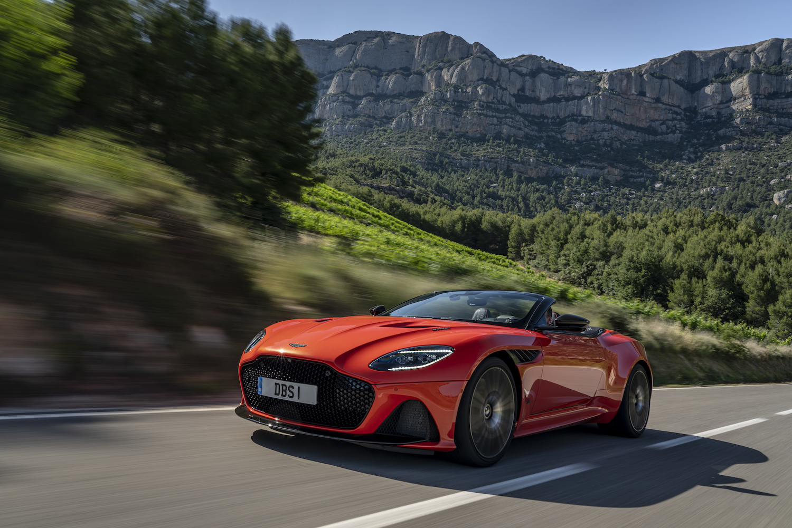
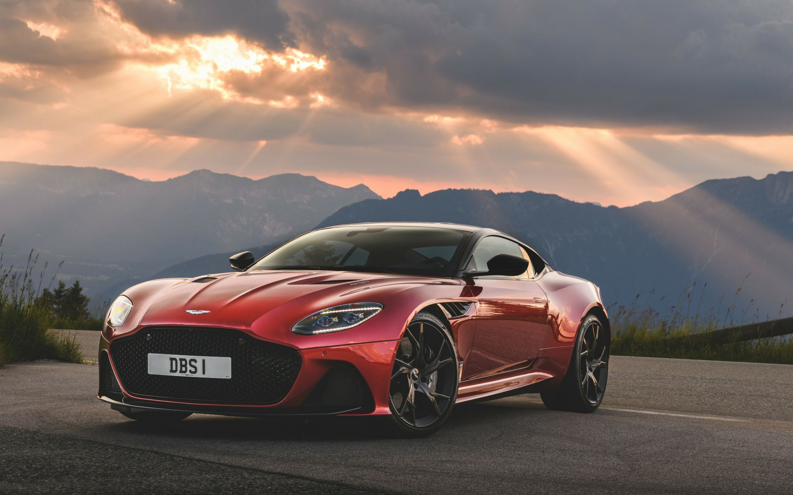
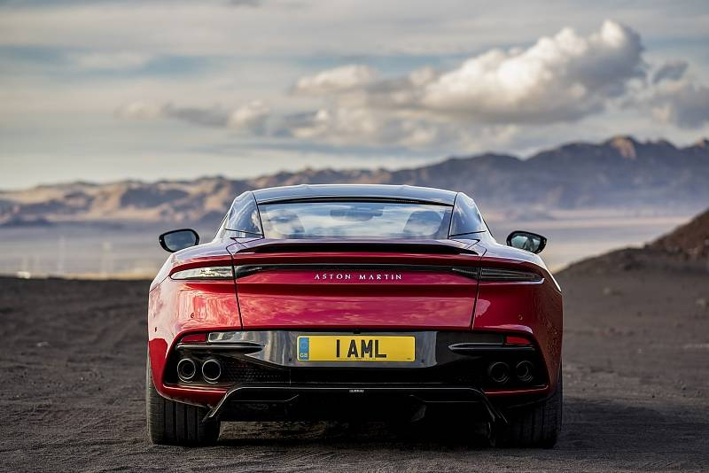

 For over half a century, the name DBS has meant just one thing: the ultimate production Aston Martin. A DBS is a distilled concentrate of all that has made Aston Martin not just one of the most coveted brands in the automotive sphere, but in all fields of endeavour, right around the world. Now the new DBS Superleggera has arrived. Its beauty leaves no room for doubt. Its power cannot be reasoned with. Unquestionably, DBS Superleggera sits at the pinnacle of the Aston Martin production range. It is both a shining light expressing the most beautiful automotive art and, at the same time, a dark and menacing shadow of brutal, unequivocal strength. It is this fine blend of seemingly opposing traits that makes the DBS Superleggera the absolute Aston Martin.
 Aggressive, yet beautiful. Super lightweight, yet powerfully strong. A commanding presence, yet lavishly finished. The DBS Superleggera Coupe and Volante offer the ultimate super GT experience. Convention says form and function are opposing interests. The DBS Superleggera proves otherwise. The shape is unmistakably Aston Martin, but stronger, broader and more muscular than ever, not at a stylist’s whim but to cool and control the most powerful production Aston Martin ever.
 The DBS Superleggera is dominated by a breath-taking hexagonal grille, combining a sense of unbounded strength with the most natural beauty. This sets the visual agenda for the entire car while simultaneously feeding the insatiable appetite for oxygen of the mighty 715bhp engine. Where others stop, we start. Settle into the sumptuous, leather upholstered interior of the DBS Superleggera and see how our high-performance seats support your body to perfection. In both the driver and passenger seat you are home before the journey has even commenced.
Copyright © Sertan Mangan 2020